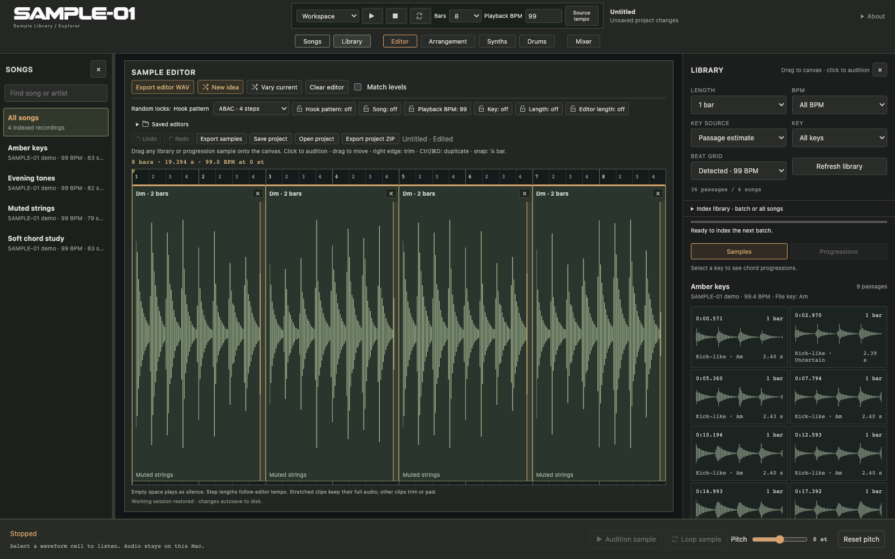

YOUR RECORDINGS. YOUR WORKSPACE.
A collection of sounds.
A place to begin.
The SAMPLE-01 field manual. Find a passage, shape an idea,
add instruments, and build an arrangement you can take further.
1.1.0 / BUILD 7
Your guide to SAMPLE-01 1.1.0: samples, instruments, mixing, arrangements and exports.
START HEREYour first
Your first
sample idea.
From a folder of recordings to
an editable loop and a saved project.
SAMPLE-01 / THE EDITOR ＋

SHAPE.
ARRANGE.
Get to know the workspace
ONE PART AT A TIME01 ↗
Find a passage
Index your recordings and narrow the search.
02 ↗
Shape a sample idea
Move, trim and combine audio on the canvas.
03 ↗
Add notes and chords
Bass, lead, poly and pad in one workspace.
04 ↗
Build a rhythm
Sequence a synthesized kit, step by step.
05 ↗
Make an arrangement
Capture ideas and place them on a timeline.
06 ↗
Take it into your DAW
Save audio, MIDI and a portable project.
A CLOSER LOOK
See the controls.
Six app screens, with room to explore.

NEW IDEA / VARY CURRENTUnderstand the six sample locks.↗PROJECTS & RECOVERYKeep the work you want to return to.↗
Feature overview
VIDEO WALKTHROUGH Looking for a particular control?Find a quick answer ↗
1.1.0 · Build 7 Local audio. Practical instructions.